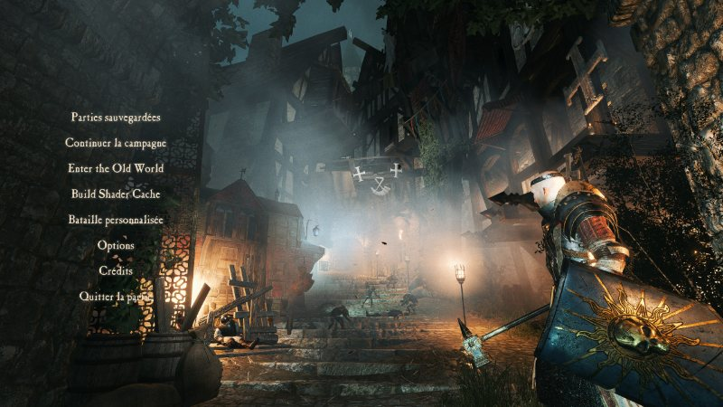
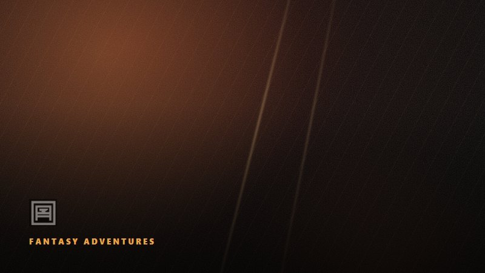

Fondateur
De la commande au marché : porter une vision produit jusqu'aux joueurs. Formé à l'ENJMIN, venu de la production, j'ai accompagné Herd de sa toute première version jusqu'à sa démo publique sur Steam.
Pays de la Loire · Français natif, anglais C2 · Full remote
Disponible pour de la direction de jeu, du product ownership et des missions de cadrage, en freelance ou à temps partiel.
Profil
J'ai commencé côté production, sur des équipes allant jusqu'à 25 personnes réparties entre deux studios, avant de passer à la direction de jeu. Ce double passage me sert tous les jours : je tiens une intention créative sans perdre de vue le budget, le planning, et les gens qui font le travail.
Sur Herd, j'ai été producer sur la première version, de 2021 à 2022, puis game director. Il fallait un jeu musical : on a cherché longtemps la mécanique juste, celle où la musique n'illustre pas la partie mais la constitue. Ensuite il a fallu la faire tenir en multijoueur, tenir un budget, et sortir la démo.
J'aime construire avec des gens et prendre soin d'eux. Ça ne m'empêche pas de trancher quand le projet en dépend.
Parcours
Octobre 2024, en cours
Games of Forge
Janvier 2024, en cours
Missions via Malt et LaGuild
Septembre 2023 à août 2024
IIM, IUT Laval
Juin 2021 à décembre 2022
La Belle Games, co-production Zero Games Studio
2016 à 2019
Lycée Saint-Charles, Chalon-sur-Saône
Compétences
Master JMIN, spécialité gestion de projet, ENJMIN (CNAM) Angoulême, 2019 à 2022.
Certifications icPO et icSM (Scrum League, 2024), gestion de projet (Université Lille 1, 2019).
Master 1 MEEF sciences économiques et sociales, Dijon. Licence et maîtrise d'anthropologie sociale, Lyon 2.
À côté
Deux mods sous la même bannière, Fantasy Adventures, sur deux moteurs qui n'ont rien à voir. C'est là que je conçois et que j'implémente moi-même, sans budget à tenir, et que je me confronte à des joueurs en quelques jours.

Une campagne narrative greffée sur la sandbox Warhammer de Bannerlord : serments, régiments personnalisables, IA de bataille à trois couches. En C#, sur une base The Old Realms.
La page du mod ›

Contrôler un héros unique à la troisième personne dans Total War: Warhammer III, un moteur fermé qui ne l'a jamais prévu. Rien n'est sorti, et je ne donne pas de date.
La page du mod ›
Joueur de tour par tour depuis l'enfance : Heroes of Might and Magic III, Civilization, Final Fantasy Tactics, Fire Emblem, Advance Wars, Age of Wonders, Total War Warhammer.
Contact
Direction de jeu, product ownership, cadrage de projet ou co-développement : dites-moi en une ligne ce que vous cherchez à faire.